CleanLine Client Onboarding Guide · v1.0
Meet your
AI business team.
Cleanline gives your business three specialised AI agents: each trained on your operations, integrated with your tools, and ready to work 24/7.
Nema · Business Intelligence
Sky · Front Desk Agent
Sophia · Team Manager
01 · Getting started
Your account, in five minutes.
Create your account, verify your email, and tell Cleanline about your business. That's it, everything else happens automatically.
Test account
To explore the platform right away, use the test credentials (username: sarahjedlaouii and PW : Sarah123! ), or create your own account and follow these same steps.
1
Create your account
Head to the Cleanline sign-up page. Enter your name, email, and a password. You'll receive a 6-digit verification code by email, enter it to confirm your account.
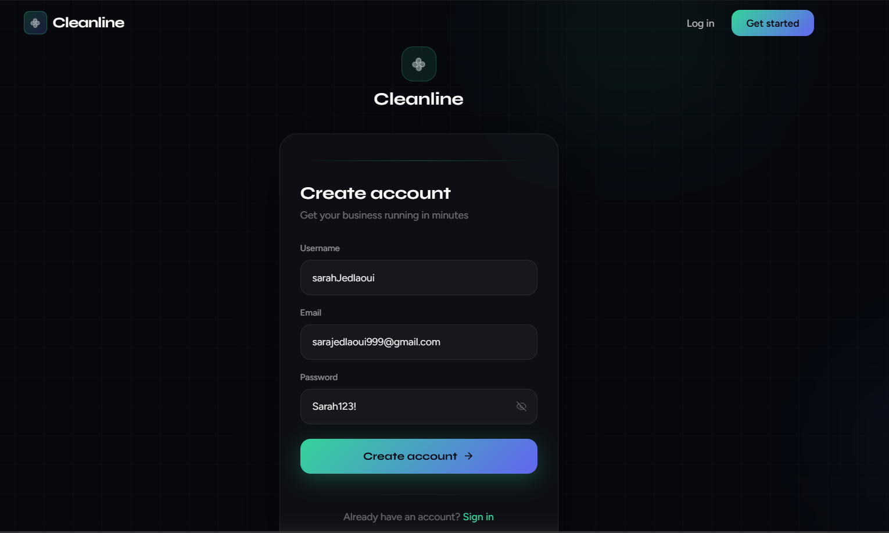
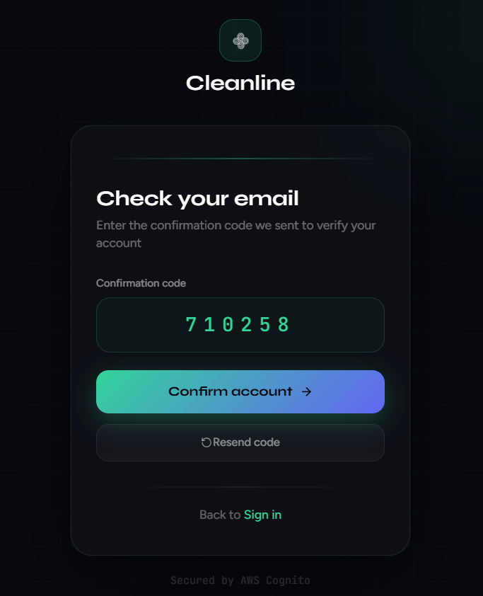
2
Log in and complete your profile
After verifying, you're taken directly to your Profile page. Fill in your business details: business name, Speciality, and anything relevant. The most important field here is your business website link: this is what Cleanline uses to learn about your business automatically.
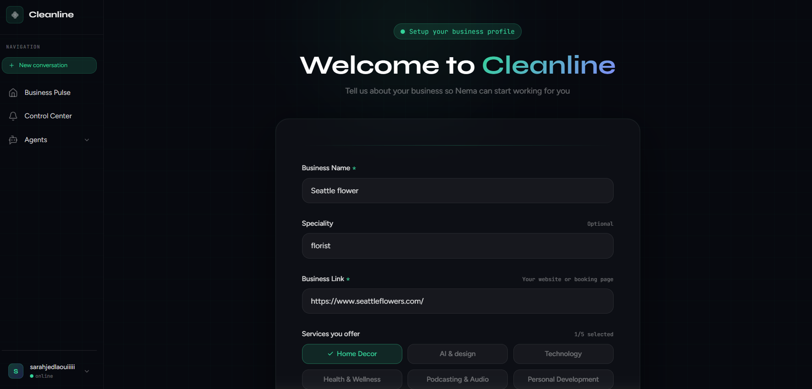
3
Save your profile and watch the magic happen
The moment you save, Cleanline begins reading your entire website automatically: services, FAQs, pricing, contacts, everything. You'll be redirected to the Agents page. A banner will appear when it's done. This usually takes less than a minute.
02 · Business Knowledge
Your business brain: built automatically.
Cleanline creates a structured knowledge base from your website. You can review it, edit it, add documents, and ask questions about it.
1
Open Business Knowledge
Once the website scan is complete, a banner appears with two options: "View Business Knowledge" or "Go Live." Click View Business Knowledge to review what was learned before going live.
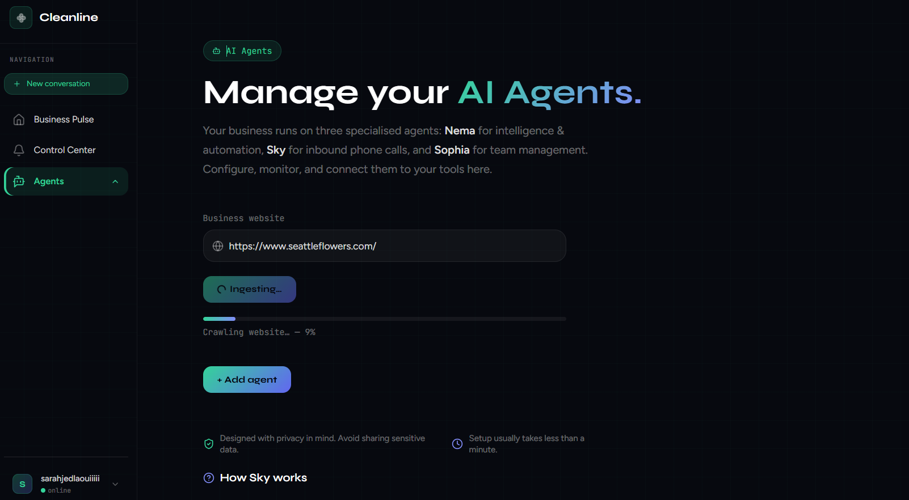
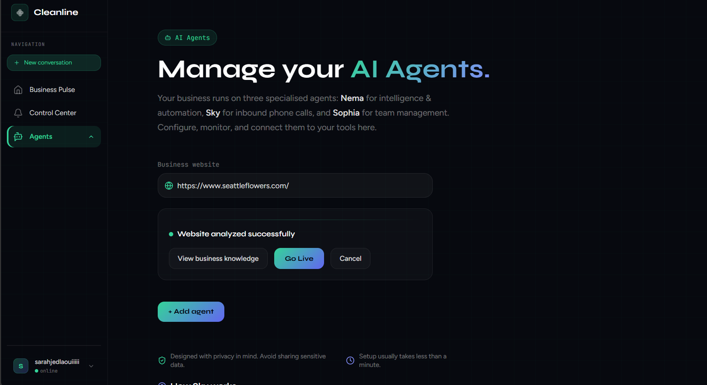
2
Review and edit the Business Wiki
The Business Wiki is a plain-language article about your business: generated from everything Cleanline found on your site. Read through it and make any corrections directly in the editor. Click Save changes when you're happy, or ✨ Regenerate to produce a fresh version.
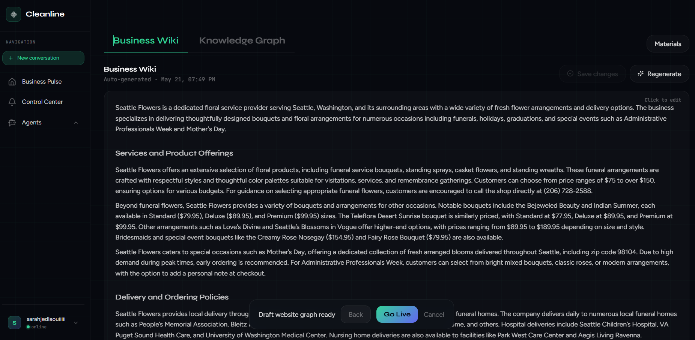
Tip
The wiki is what Sky uses to answer customer calls. The more accurate it is, the better Sky will sound.
3
Explore the Knowledge Graph
The Knowledge Graph shows all the questions and answers Cleanline extracted from your site, organised by topic. You can add new topics, questions, and answers manually, or type a question in the chat box to query it instantly.
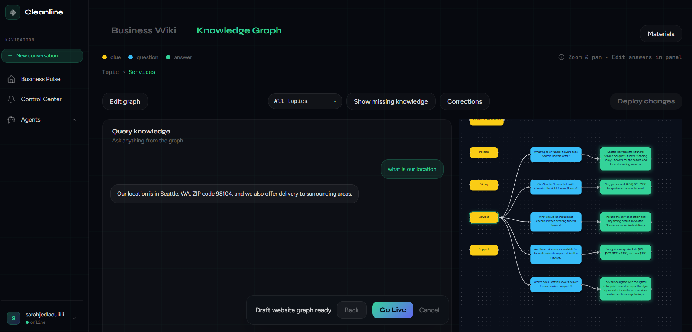
4
Add documents (optional)
Click Materials to upload PDFs, menus, price lists, or any document. Cleanline will extract the knowledge from them and add it to the graph automatically, your agents will know that information too.
03 · Agent
Sky: your 24/7 front desk.
Sky is a phone receptionist powered by your business knowledge. Customers call a real number and get answered instantly, any time of day.
1
Go Live
From the Agents page or the post-ingest banner, click Go Live. Sky is created immediately and assigned a dedicated phone number. Share this number with your customers, it's their direct line to your business.
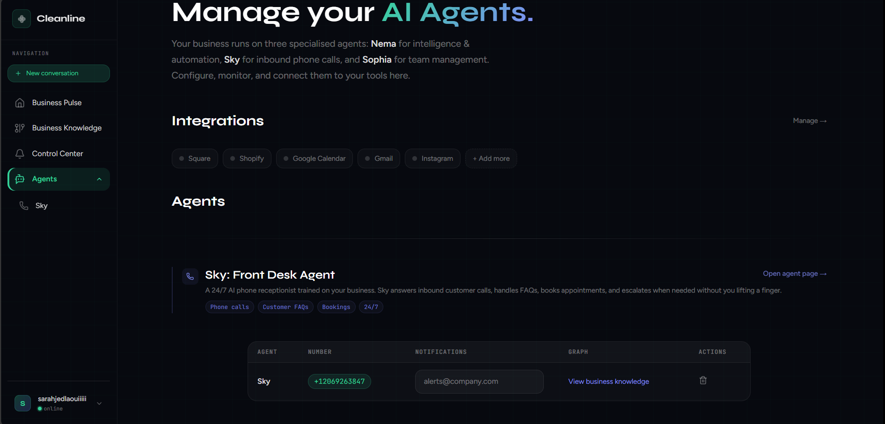
2
Sky's capabilities out of the box
Sky can answer any question covered by your business knowledge, handle booking requests, and take messages for your team. Sky never guesses, if it doesn't know something, it takes a message and notifies you.
📞
Call handling
Answers every call with a professional greeting in your brand voice
❓
FAQ answering
Answers hours, pricing, services, and anything in your knowledge base
📅
Booking requests
Takes appointment requests and feeds them to your Controle Center
📋
Message taking
Logs caller intent and details in the Control Center
3
Add notes for Sky (time-sensitive info)
On Sky's agent page, you'll find a Notes section. Add a note with a start and end date to give Sky temporary information, for example: "Closed for renovations 9–12 July" or "Special offer on during this week." Sky will reference these notes during that period and ignore them after.
4
View call insights
Sky's page shows a live insights panel: what callers are asking about most, call volume over time, and common topics. All individual calls are logged in the Control Center.
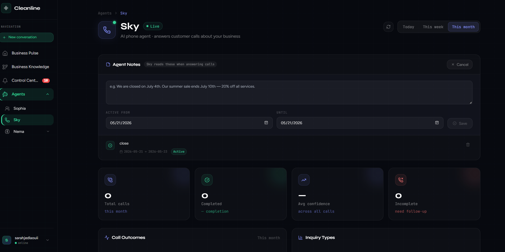
04 · Agent
Sophia: your team coordinator.
Sophia keeps your team in sync. She sends check-in messages, collects responses, and surfaces a clean summary, so you always know what's happening on the ground.
1
Add Sophia from the Agents page
On the Agents page, click Add agents. In the modal, choose Sophia: Team Manager. She's created instantly with her own phone number.
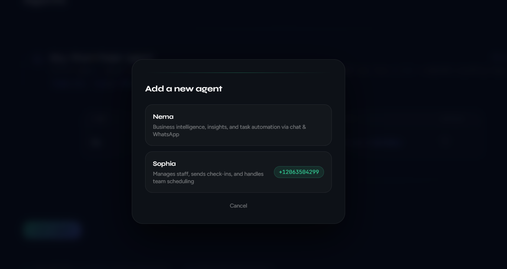
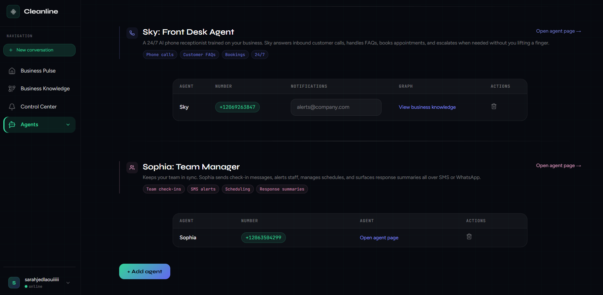
2
Add your team members
Open Sophia's agent page and click Add member. Enter each team member's name and phone number. Sophia will reach out to these people during check-ins.
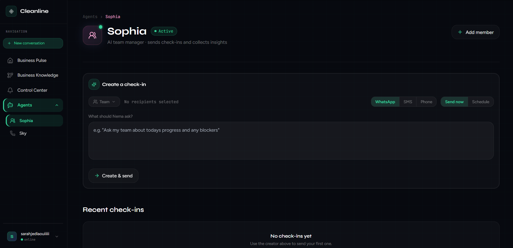
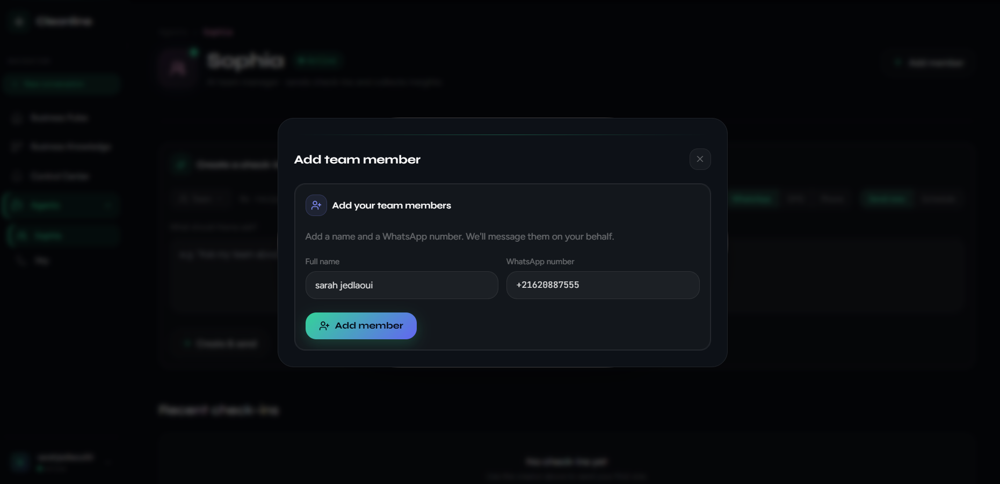
3
Create a check-in
Click New check-in and type what you want Sophia to ask, for example: "Can you confirm delivery was completed today?" or "What's your current workload this afternoon?" Choose a channel (phone call, SMS, or WhatsApp , note use phone for testing ) and either send it now or schedule it for later.
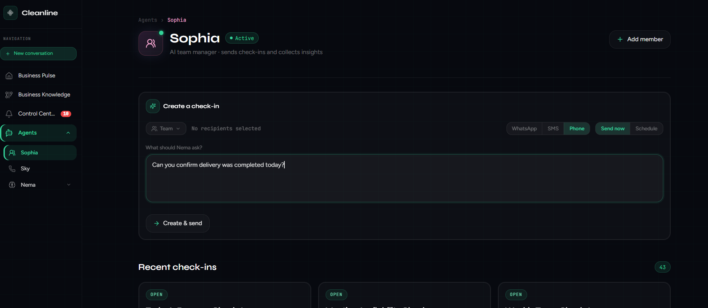
Tip
You can also create check-ins by asking Nema on WhatsApp:
"Ask the team via WhatsApp if the delivery arrived."
4
Review responses and summaries
Once team members respond, head to the Check-ins tab on Sophia's page. You'll see who replied, what they said, and an AI-generated summary of all responses, no need to read every message individually.
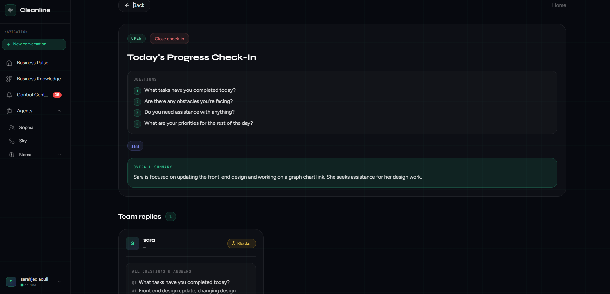
05 · Agent
Nema: your business co-pilot.
Nema is your AI business assistant. Talk to it like a colleague, on the web, or on WhatsApp from your phone, and it takes care of the rest.
1
Add Nema from the Agents page
Click Add agents and choose Nema: Business Intelligence. Two things are created: a Chat Agent accessible via the dashboard, and a WhatsApp Personal Assistant with its own number.
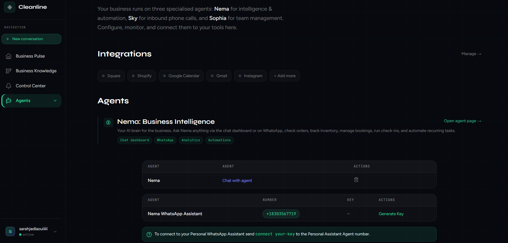
2
Connect Nema on WhatsApp
On the Agents page, find the WhatsApp row for Nema. You'll see a key and a phone number. Save that number in your contacts, then send it the following message:
WhatsApp connection message
Send:
connect your-key
Replace
your-key with the key shown on your Agents page.
Nema will confirm the connection and you're ready to use it from WhatsApp, from anywhere, any time.
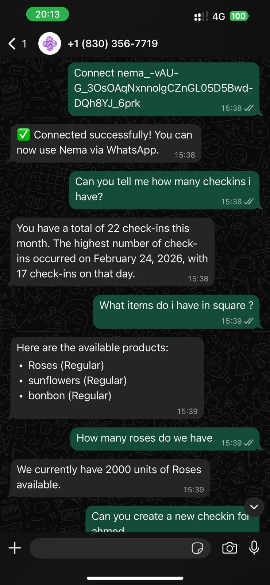
06 · Integrations
Connect your tools.
Cleanline connects to the tools you already use. Once connected, Nema can read and act on real data: your actual calendar, inbox, orders, and inventory.
Where to find this
Go to the
Agents page → Integrations section. All connectors are listed there with a Connect button.
Gmail
Connect Gmail
Click Connect next to Gmail. You'll be taken to Google's sign-in page. Choose your account. You'll see a warning that says "Google hasn't verified this app."
Expected screen: don't be alarmed
This appears because we're in the process of completing Google's app review. It's safe to continue. Click
"Advanced settings" at the bottom left, then click
"Access Nema (unsafe)": and the integration will connect successfully.
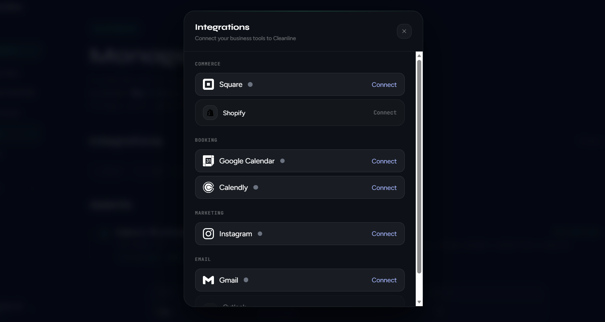
GCal
Connect Google Calendar
Same flow as Gmail. Click Connect, sign in with your Google account, follow the same Advanced settings step, and your calendar is connected. Nema will be able to check your availability, create bookings, and manage your schedule.
Square
Connect Square (test account)
Click Connect next to Square. You'll be redirected to Square's login. Use the test account below to explore inventory and order data:
Square test credentials
| Email | sarajedlaoui999@gmail.com |
| Password | bridges206!!! |
Shopify
Connect Shopify (test store)
Click Connect next to Shopify. When asked for your store URL, enter:
Shopify test store
nema-dev.myshopify.com
Follow the on-screen verification steps. Once approved, Cleanline will have access to your product catalogue and order data.
07 · Nema Chat
Just ask. Nema handles it.
No commands to learn. No menus to navigate. Describe what you need in plain language: from the chat dashboard or WhatsApp, and Nema takes action.
Where to start
Open the Nema chat dashboard. You'll see suggestion chips organised by category: tap any to try it instantly, or type your own message.
📅 Bookings & Calendar
Check if I'm free tomorrow at 3pm
Book a meeting with Maria at 2pm today
Show me my appointments this week
Cancel my 4pm meeting and email the attendee
Find my first free slot today and book it for Alex
📦 Inventory & Commerce
Check inventory for roses
Show me all products below 20 units
List everything that's out of stock
How many orders did we get today?
What did we sell this week?
✉️ Email
Send an email to sara@company.com about the weekly report
Search my inbox for messages from the supplier
Read my latest email and reply if it's urgent
Schedule an email to the team at 9am tomorrow
👥 Team
Call Sara and ask her to confirm the delivery
Send a WhatsApp to the whole team for status updates
Schedule a check-in with John at 3pm
📊 Analytics
How many bookings did we get today?
Show me check-in completion rate this week
What's the call volume this month?
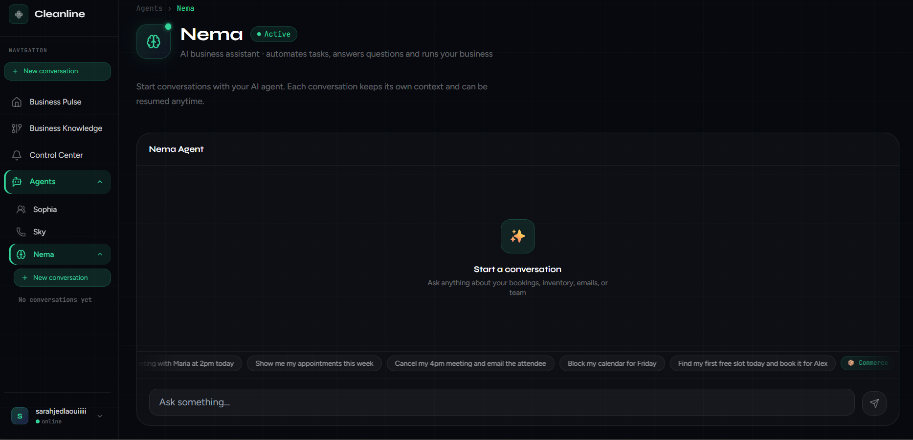
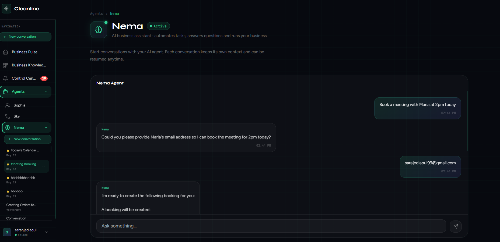
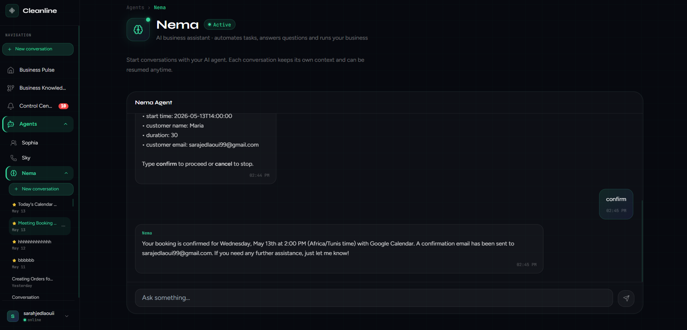
Note
If something went wrong with the chat just type cancel to cancel the current mission and start again, or just start a new conversation by clicking on
"+ New conversation"
08 · Automations
Set it once. Let it run.
Tell Nema when and how you want things done. Scheduled actions run at a specific time. Conditional automations trigger automatically when something happens in your business.
📅
Scheduled actions
Run any action at a specific time: once or on a recurring schedule
⚡
Conditional triggers
Fire automatically when a business metric crosses a threshold
📬
Daily recap
Get a morning briefing of bookings, orders, team check-ins, and more
⚡ Example automations to try
When I get more than 5 orders today, send me a summary email
Every morning send me a daily business recap
When inventory goes below 5, ask Sara to restock via WhatsApp
Schedule an email to the supplier every Monday at 9am
If inventory drops below 10, email me and call Sara
Works on WhatsApp too
You can create and manage automations directly from WhatsApp, just describe what you want.
"Every Monday morning, check inventory and email me a report."
→
Manage your automations
All active automations live in the Control Center under the Missions section. You can see which are pending, edit their conditions or schedule, pause them, or cancel them entirely, without needing to create them again from scratch.
09 · Control Center
Everything in one place.
The Control Center is your operations hub. Customer call logs, active automations, scheduled missions, and action history, all visible and manageable in one view.
1
Customer Calls: log of every call Sky handled
The Customer Calls section shows every call Sky answered, with a summary of what the caller wanted. Click any call to see the full transcript and details. If a caller requested a booking or order, you can mark it as actioned once you've followed up.
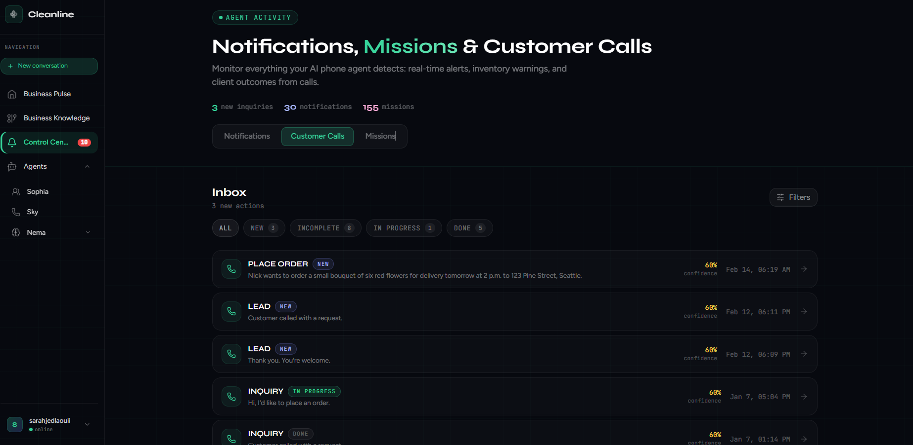
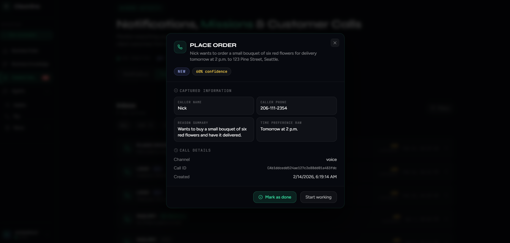
2
Missions: your active automations
The Missions section shows all automations Nema is running for you: scheduled sends, conditional triggers, and recurring daily recaps. Each card shows the next run time and current status. You can edit the time or conditions, or cancel any mission directly.
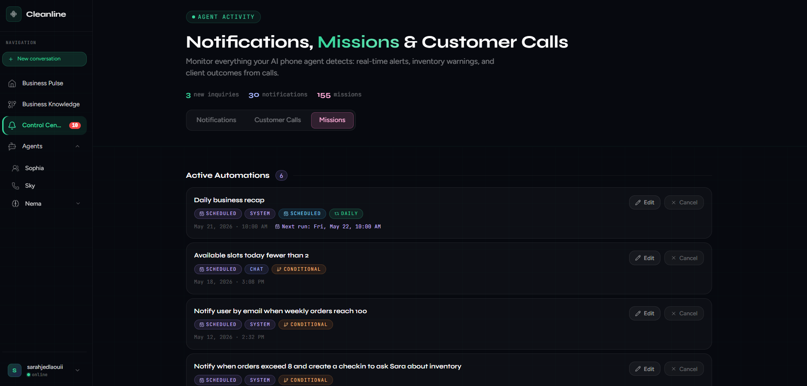
3
Mission history: full audit trail
Below active missions you'll find a complete history of all past actions Nema has taken. Click any item to see exactly what ran, when, and what the result was: including a link back to the original conversation where it was created.
10 · Business Pulse
Your business, at a glance.
The Business Pulse page brings together data from all three agents: bookings, orders, calls, team check-ins, in a single daily snapshot.
📈
Daily snapshot
Bookings, orders, revenue, and inventory, updated throughout the day
🔔
Monitoring alerts
See which conditional automations are close to triggering
📞
Sky insights
Call volume and top topics customers are asking about
✅
Team check-ins
Completion rates and sentiment from Sophia's latest check-ins
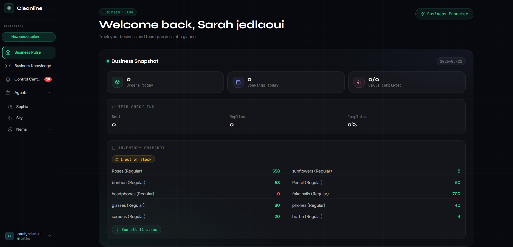
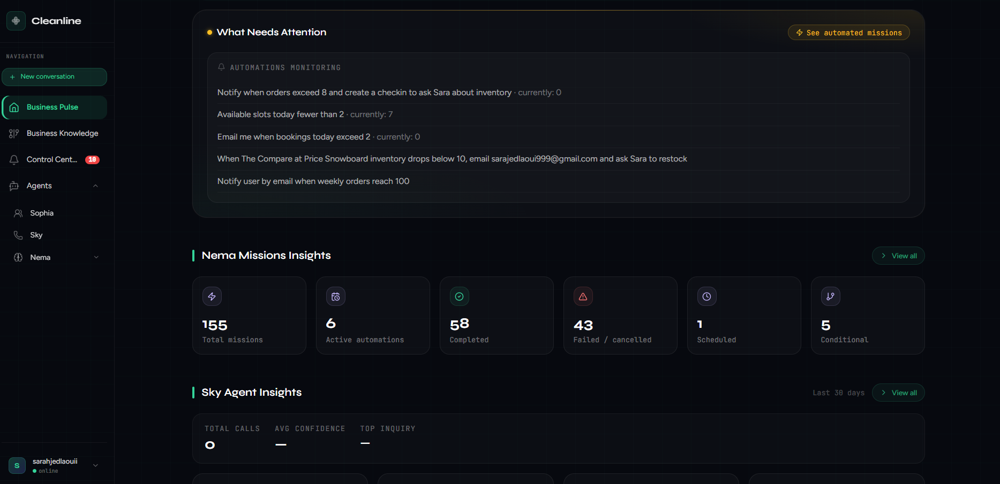
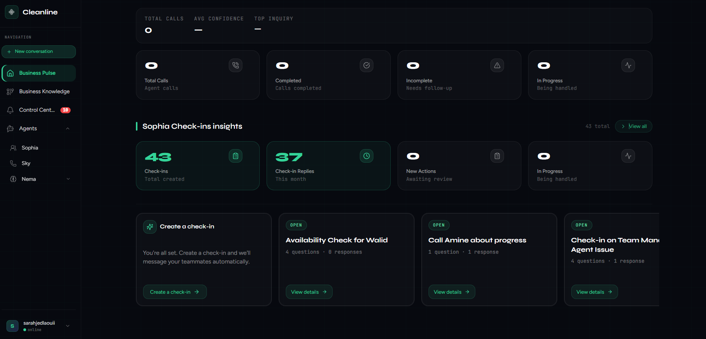
Cleanline
Questions during onboarding? Reach out to your to sarajedlaoui999@gmail.com and we'll walk you through anything step by step.
CONFIDENTIAL · FOR EVALUATION USE ONLY